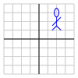
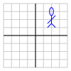

Dans une autre démonstration, vous avez pu explorer les transformations linéaires du plan: $${\mathbf A}{\mathbf x} = \begin{bmatrix}\color{blue}a & \color{blue}b\\\color{blue}c & \color{blue}d\end{bmatrix} \begin{bmatrix}x \\ y\end{bmatrix} = \begin{bmatrix}\color{blue}ax + \color{blue}by \\ \color{blue}cx + \color{blue}dy\end{bmatrix} = \begin{bmatrix}x' \\ y'\end{bmatrix} = {\mathbf x'} $$ Une des limitations de ce type de transformation est qu'on ne peut pas générer des translations. Par exemple, ci-dessous, l'image de droite correspond à la translation $$ \begin{bmatrix}x \\ y\end{bmatrix} \qquad\color{blue}{\Rightarrow} \qquad \begin{bmatrix}x+2 \\ y+1\end{bmatrix}$$.
 $\qquad\color{blue}{\Rightarrow} \qquad$

$\qquad\color{blue}{\Rightarrow} \qquad$

Une façon de permettre de les translations est d'utiliser ce qu'on appelle des coordonnées homogènes, où on ajoute artificiellement une dimension supplémentaire. Pour les transformations du plan ceci correspond à transformer des vecteurs de \({\mathbb R}^3\) au lieu de \({\mathbb R}^2\). $${\mathbf A}{\mathbf x} = \begin{bmatrix}\color{blue}a & \color{blue}b &\color{red}{e} \\ \color{blue}c & \color{blue}d & \color{red}{f}\\ 0 & 0 & 1 \end{bmatrix} \begin{bmatrix}x \\ y \\ 1\end{bmatrix} = \begin{bmatrix}\color{blue}ax + \color{blue}by + \color{red}{e} \\ \color{blue}cx + \color{blue}dy + \color{red}{f}\ \\ 1\end{bmatrix} = \begin{bmatrix}x' \\ y' \\ 1\end{bmatrix} = {\mathbf x'} $$ Ainsi, la translation illustrée précédemment correspond à la matrice $$ \begin{bmatrix} 1 & 0 & 2 \\ 0 & 1 & 1 \\ 0 & 0 & 1 \end{bmatrix} $$ Graphiquement, cet ajout d'une coordonnée supplémentaire peut être représenté de la façon suivante:

Au bas de la page, vous pouvez visualiser les différents types de transformations possibles en choisissant différents paramètres ci-dessous.
| a | b | e | ||
| c | d | f | ||
| 0 | 0 | 1 |
| 1 | 0 | 0 | ||
| 0 | 1 | 0 | ||
| 0 | 0 | 1 |
|
Aperçu de la transformation. |
Ceci a été adapté de la version originale par David Austin.